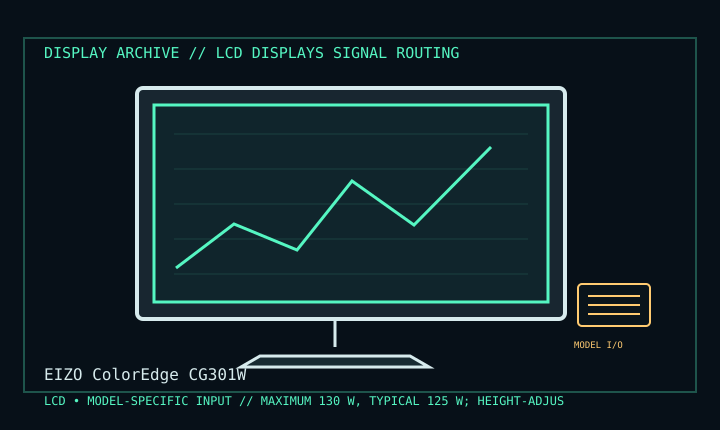

[ INDIVIDUAL COMPONENT // DISPLAY ARCHIVE ]
EIZO ColorEdge CG301W
30.1-inch wide-gamut color-critical LCD from EIZO’s CG series.

IDENTIFICATION: Match the exact model suffix, region and installed option boards to the cited manual and rear label. Do not infer electrical compatibility from connector shape.
Model-specific specifications
| Catalog class | Lcd Displays |
|---|---|
| Exact product | EIZO ColorEdge CG301W |
| Era / purpose | 30.1-inch wide-gamut color-critical LCD from EIZO’s CG series. |
| Panel / image | 30.1-inch 16:10 TFT LCD; 2560 × 1600 native resolution at 60 Hz. |
| Inputs / bandwidth | Two DVI-I inputs; dual-link DVI-D is needed for full 2560 × 1600 at 60 Hz. Analog input cannot carry that digital mode. |
| Power / mechanical | Maximum 130 W, typical 125 W; height-adjustable stand with tilt, swivel and portrait rotation; 100 mm VESA mounting. |
| Calibration | Built-in calibration sensor and color management; calibration result depends on software, sensor condition and setup. |
Revision, timing & host compatibility
Use a dual-link DVI output/cable for native resolution and verify the host exposes 2560 × 1600/60 Hz. DVI-I shape accepts analog or digital pins but is not a converter. Confirm CG301W, not a similarly named CG-series generation; retain calibrated color profiles and connected sensor state.
Before operation, compare source signal type, scan/frame timing, pinout, interface bandwidth, input-board configuration and mains/DC rating against the model-specific manual and nameplate. A listed maximum mode is not a promise of optimum image quality.
Vintage preservation & repair notes
Before reset or repair, export calibration profiles and log sensor readings, uniformity and backlight aging. Preserve hood/stand and DVI cable. Clean per EIZO instructions; avoid touching the panel or opening the monitor outside qualified service.
Record serial/date code, configuration, all installed interface boards, accessories, image condition, calibration state, test source and document edition. Disconnect power before external cleaning and use only the manufacturer-approved procedure; do not open CRT/LCD/OLED equipment without qualified service practice.
Manufacturer manuals & specifications
- EIZO Manuals — ColorEdge CG301WManufacturer manual index keyed to the exact model.
- EIZO Product Support — CG301WManufacturer product database and support documentation.